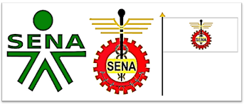

¿Qué significa el Himno del Sena?
El SENA nació durante el gobierno de la Junta Militar -posterior a la renuncia del General
Gustavo Rojas Pinilla-, mediante el Decreto Ley 118,
del 21 de junio de 1957. Su función, definida en el Decreto 164 del 6 de agosto
de 1957, fue brindar formación profesional a trabajadores,
jóvenes y adultos de la industria, el comercio, el campo, la minería y la ganadería.
Su creador fue Rodolfo Martínez Tono.
Así mismo, siempre buscó proporcionar instrucción técnica al empleado,
formación complementaria para adultos, y ayudarles a los
empleadores y trabajadores a establecer un sistema nacional de aprendizaje.
La Entidad que tiene una estructura tripartita, -en la cual
participarían trabajadores, empleadores y Gobierno-, se llamó
Servicio Nacional de Aprendizaje (SENA), que se conserva en la actualidad y
que muchos años después, busca seguir conquistando nuevos mercados,
suplir a las empresas de mano calificada utilizando para ello métodos
modernos y lograr un cambio de paradigma en cada uno de los
procesos de la productividad.


.png)